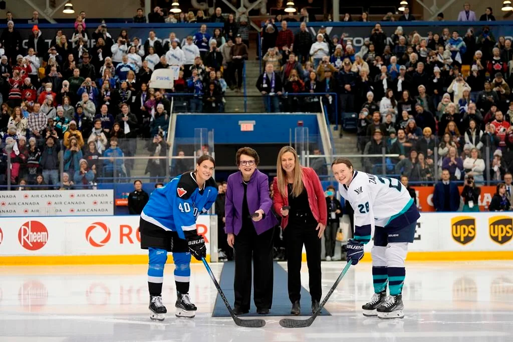

1992
Manon Rheaume was the first and so far only woman to participate in an NHL game, playing one period for the Tampa Bay Lightning in an exhibition game, leading the way for all women to play professionally, even if not with men. (IIHF, n.d.)
The path for women to play professional hockey has never been clear-cut like it has been for men for over a century. Leagues would come and go, as would the public's interest, so until the start of the PWHL in January 2024, there has never been a reliable future for any player. Even when there were seemingly stable leagues, such as the NWHL/PHF, many players were unwilling to play, saying they deserved stability and reliable pay.
Manon Rheaume was the first and so far only woman to participate in an NHL game, playing one period for the Tampa Bay Lightning in an exhibition game, leading the way for all women to play professionally, even if not with men. (IIHF, n.d.)
The National Women's Hockey League (1999-2007) is founded, absorbing three COWHL teams as it starts. This is widely accepted as the first professional women's hockey league in Canada, though its players were unpaid, causing some to consider it semi-professional, a term that is used frequently when discussing women's hockey leagues that predate the PWHL.
The league changed names and configurations many times, introducing American teams and, in 2009, awarding the season champions the Clarkson Cup, a championship trophy donated in the same spirit the Stanley Cup was donated to the men (IIHF, n.d.).
The Western Women's Hockey League is formed. It lasts through to 2011. (HHOF, n.d.)
Also of note, the Minnesota Whitecaps were formed and remained in operation throughout multiple leages until the collapse of the PHF in 2023, making them the longest standing North American women's hockey team. (Clayton, 2023)
The Canadian Women's Hockey League is formed, replacng the National Women's Hockey League. Initially consisting of teams in Ottawa, Montreal, Quebec and the Greater Toronto Area, it was a semi-professional league intended to spread women's hockey throughout the country. (CBC Sports, 2007)
In 2017, the league expanded into China, and had a total of seven teams–the Kunlun Red Star, Vanke Rays, Toronto Furies, Boston Blades, Brampton Thunder, Calgary Inferno, and Montreal Canadiennes. (Associated Press, 2017).
The class inducted to the Hockey Hall of Fame that included women, Cammi Granato and Angela James. Both played in semi-professional leagues and later were involved in coaching and leadership within the sport. (HHOF, n.d.)
The second National Women's Hockey League, later renamed to the Premier Hockey Federation is formed. This is the first professional women's hockey league to pay its players salaries, though there was debate as to whether pay was sufficient.
Professional hockey players protesting for better treatment form the Professional Women's Hockey Player Association. This league aims to promote fair pay, better insurance for their players, and equal opportunities. (Azzi, 2023)
After a period of bargaining with the PWHPA and future PWHL owners Mark Walter and Billie Jean King, the PWHPA buys out the PHF and announces the start of a new and improved league. This league aims to have everything PWHPA members were bargaining for, as well as the hope that it is sustainable and long-term. (Azzi, 2023)

The Professional Women's Hockey League starts playing. With six inaugral teams split between Canada and the USA, the league expanded to eight teams for its third season in 2025, and is in talks for another expansion of 2-4 more teams in its fourth. (Sportsnet Staff, 2025)